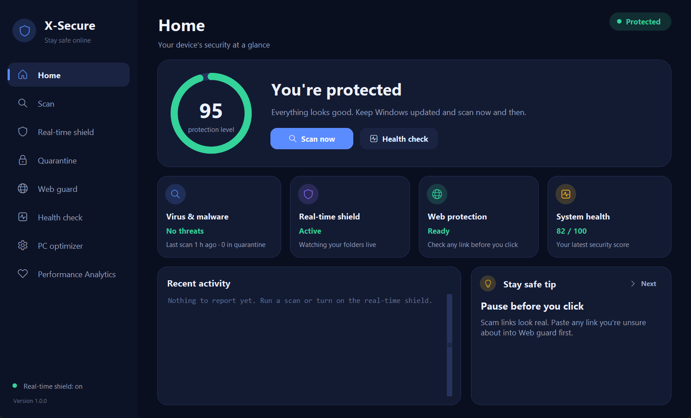
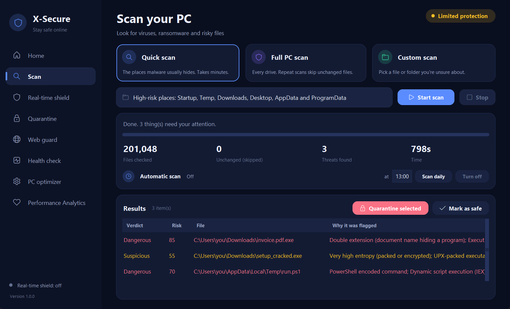
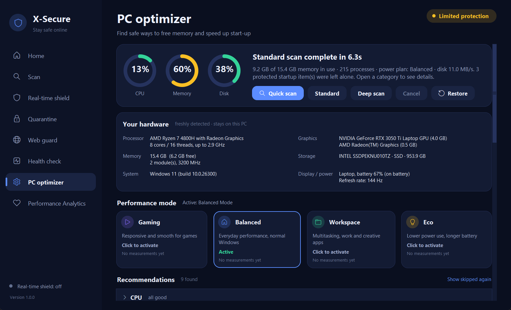
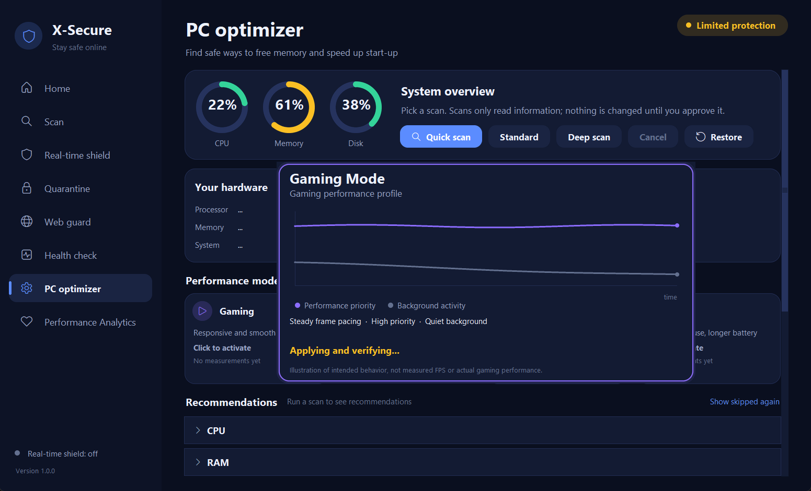
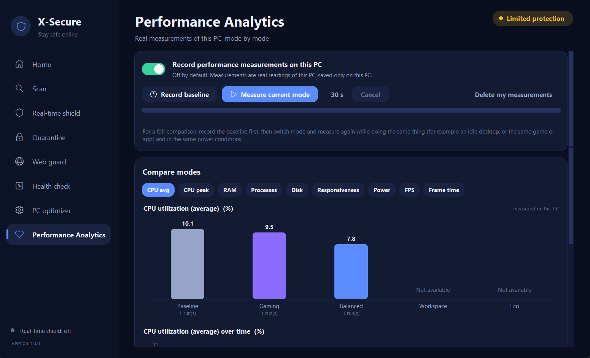
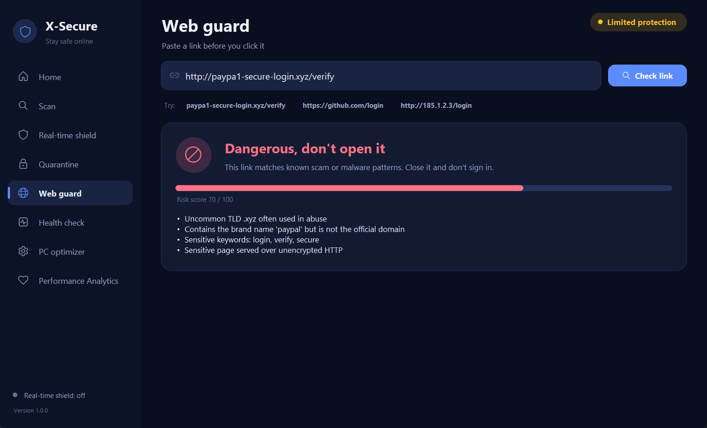

A Windows security suite I built from scratch: a parallel file scanner, real-time protection, a browser guard that hands downloads to the desktop engine, a system health audit, and a PC optimizer that never changes anything without asking and can undo everything it does.

Numbers from the project's own benchmark and tests, run on my development PC (Windows 11, Ryzen 7 4800H). Detection samples are harmless synthetic files, one per technique, so this shows each detection works, not how well it does against malware in the wild.
This is the same JavaScript engine that runs in the X-Secure browser extension. It runs entirely in your browser; nothing you type is sent anywhere.
Try:
The desktop app also checks links against a downloaded list of about 160,000 known-bad domains and uses the Public Suffix List; this web demo uses the built-in rules only.
A dark, rounded desktop UI with antialiased graphs, keyboard navigation and plain-English results.
About these screenshots: the Home and Scan screens show sample data (example files and a pre-filled scan summary) so none of my real file paths appear. The hardware details, memory/CPU gauges and mode list on the optimizer screen are real readings from my PC. The Analytics bars are real short test runs, and the mode-switch graph is a labelled illustration.





SHA-256 blocklist, entropy and PE heuristics, script and encoded-PowerShell analysis (including UTF-16 and download-and-run cradles), archive and Office-macro inspection, ransomware signs, and hidden NTFS alternate data streams.
Parallel worker processes at low priority, a SQLite cache that skips unchanged files, and symlink, junction and cloud-file handling so a full-PC scan never loops or downloads anything.
Authenticode signatures are checked through Windows' own WinVerifyTrust, offline, and only soften program-structure heuristics. A signature never excuses a double extension or a known-bad hash.
Quarantined files are encrypted with Windows DPAPI, bound to their own id so tampered or swapped files refuse to restore. No key sits next to the data.
A Chrome/Edge extension that shares its URL logic with the desktop app (verified identical by tests that run the JS in Node) and sends each finished download to the desktop scanner over Native Messaging.
Reversible changes only, each approved first and verified after. It never closes apps, touches services, security features or boot settings, and shows "no meaningful change" when that's the truth.
It can detect and react, but cannot block a program before it starts; that needs a kernel driver. Heuristics miss novel malware and can flag unusual but legitimate software.
The allowlist, cache and quarantine live in your user profile, so malware running with your privileges could tamper with them. Fixing that needs a SYSTEM service.
They show what each mode is designed to prioritize and are labelled that way. Measured numbers appear only on the Analytics page, and FPS, frame time and power draw show "Not available" because Windows does not expose them to normal apps.
Windows SmartScreen may warn on first run. You can also run it from source.